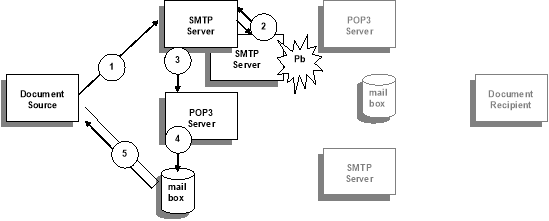
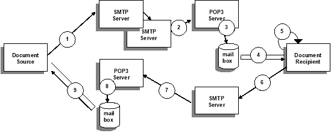

IHE IT Infrastructure (ITI)
Technical Framework
Revision 16.0 – Final Text
Appendix T: Use of eMail (Informative)
The off-line mode protocol uses the classical email exchange, based on SMTP server(s) as well as a POP3 server storing the recipient mailbox. The different steps of the exchange are described below, depending on the success or failure status of the exchange. The mechanism may be similar and use the evolution of these protocols (ESMTP, EMAP4). The Document Source and the Document Recipient shall at least support SMTP and POP3, but they may also support ESMTP and EMAP or similar. The example may also apply for a Document Repository when the off-line protocol binding is used.
In case the message cannot reach the Document Recipient POP3 server, the diagram is the following:

Figure T-1: Exchange diagram when the message is sent with error
Where the steps are:
- Initial message sent by the Document Source to its SMTP server
- Transfer of this message to the Document Recipient POP3 server, potentially through a number of other SMTP servers acting as relays, but with a problem arising (which could be also at the POP3 Server level as “user email unknown” or “over quota exceeded in the destination mailbox”). An error message “Delivery Status Notification” (DSN) is generated by the server where the problem occurs, and sent back to the sender (using its “reply to” address if present, its “from” address otherwise)
- Reception of the negative DSN message by the Document Source POP3 server
- Store of the received message by the POP3 server in the mail box dedicated to the Document Source
- Query and retrieve of the message by the Document Source from its mailbox (and normally deletion of this message).
In case the message reaches the Document Recipient POP3 server, the diagram is the following:

Figure T-2: Exchange diagram when the message is successfully sent
Where the steps are:
- Initial message sent by the Document Source to its SMTP server
- Transfer of this message to the Document Recipient POP3 server, potentially through a number of other SMTP servers acting as relays
- Store of the received message by the POP3 server in the mail box dedicated to the Document Recipient
- Query and retrieve of the message by the Document Recipient from its mailbox (and normally deletion of this message).
- Local confirmation of the success (or failure) when it “processes” the message inside the Document Recipient (which could be that the user has read the message or at least that it has been correctly imported in the EHR)
- Generation by the Document Recipient of a “Message Delivery Notification” message, that can be positive (respectively negative with the status)
- Reception of the positive MDN message by the Document Source POP3 server
- Store of the received message by the POP3 server in the mailbox dedicated to the Document Source
- Query and retrieve of the message by the Document Source from its mailbox (and normally deletion of this message).
Figure T-3: Sequence diagram of a secured message exchange